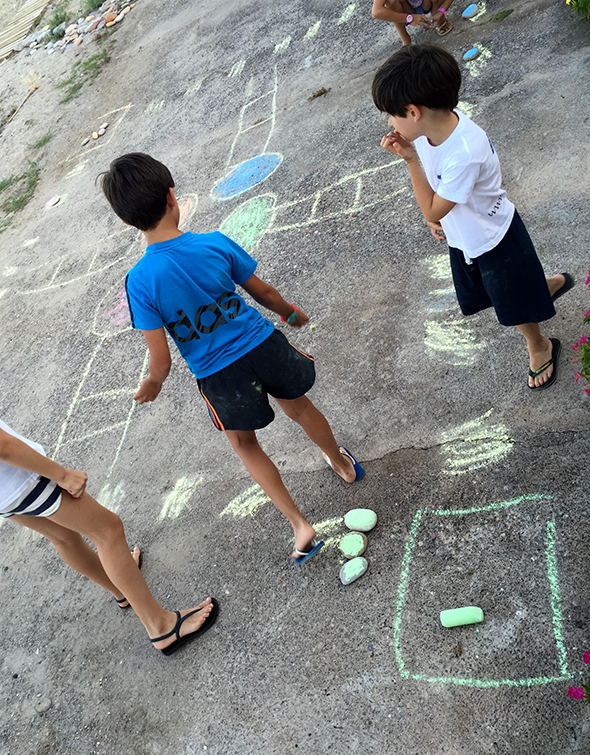

Carolina, Alvaro, Hannah y Noah han montado un parchis con tizas. Las figuras son piedras pintadas con tiza.
Carolina, Alvaro, Hannah and Noah have made a Ludo game with chalk. The figures are chalk painted rocks.
Carolina, Alvaro, Hannah und Noah haben ein Mensch ärgere dich nicht - Spiel mit Kreide gemalt. Die Figuren sind mit Kreide angemalte Steine.
